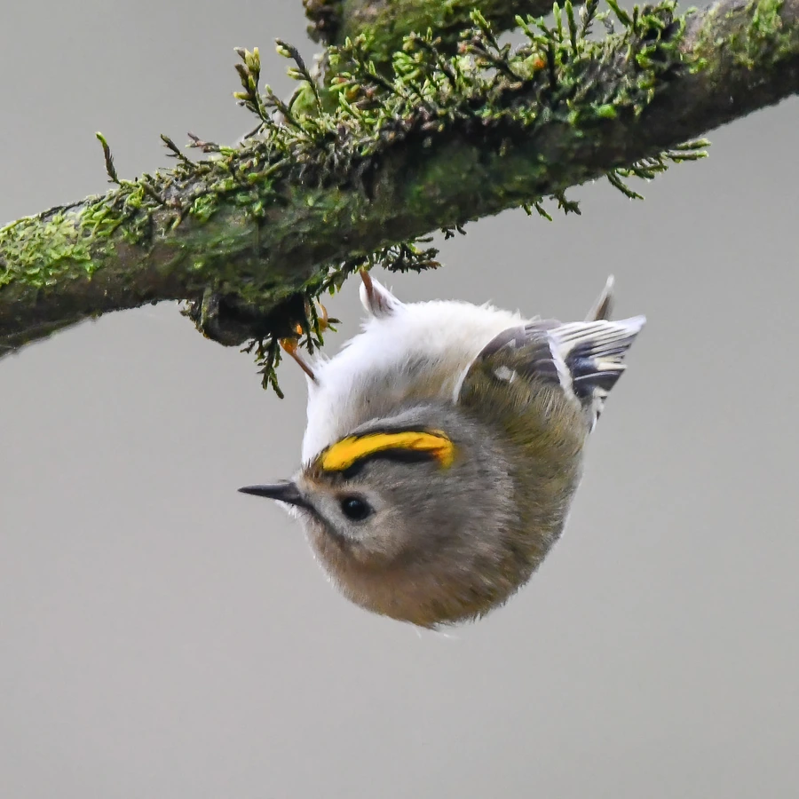

鸟类 · 动物界
戴菊 Regulus regulus

体形极小的鸟类，头顶有鲜艳的橙黄色冠羽，像戴着一朵小菊花，常在针叶林间跳跃觅食，是最小的鸣禽之一。
- 分类
- 门脊索动物门纲鸟纲目雀形目科戴菊科属戴菊属
- 栖息环境
- 针叶林、针阔混交林和公园的松柏树丛，常在枝叶间跳跃觅食
- 地理分布
- 欧亚大陆针叶林带，中国东北、华北、西北和西南有繁殖或越冬种群
- 保护级别
- IUCN 无危（LC）；中国“三有”保护动物
物种志
戴菊体长 8–11 cm，体重约 4.5–7 g，是中国最小的鸟类之一。它的背部呈橄榄绿色，腹部灰白色，翅膀上有黑色和白色的翅斑；最醒目的是头顶的冠羽：雄鸟为橙黄色，雌鸟为黄色，冠羽两侧有黑色纵纹，兴奋时可以竖起，像戴了一朵小菊花。
戴菊分布于欧亚大陆的针叶林，中国东北、华北、西北和西南的针叶林中有繁殖或越冬种群，部分北方种群冬季南迁。它们栖息在针叶林、混交林和公园的松柏树丛，常在枝叶间跳跃觅食，以昆虫和蛛类为主食，也会吃少量种子，冬季能耐严寒。繁殖期在针叶树上筑杯状巢，每窝产卵 5–12 枚，孵化约 15–17 天。戴菊体形虽小，却十分活跃，是针叶林生态中常见的小型鸣禽，目前被列为无危物种，中国将其列入“三有”保护名录。
形态与习性
- 食性昆虫和蛛类为主，也吃少量种子
- 体长8–11 cm
- 体重约 4.5–7 g
- 繁殖每窝 5–12 枚卵，孵化约 15–17 天
- 寿命野外约 3–5 年
- 冠羽雄鸟橙黄、雌鸟黄色，兴奋时竖起
- 耐寒冬季能在针叶林和雪后的松树上活动
趣味知识
- 戴菊是中国最小的鸟类之一，体重仅约 5 g。
- 它头顶的橙黄色冠羽像一朵小菊花，名字由此而来。
- 戴菊能在针叶林里悬停啄食，十分灵活。
- 冬季它们能耐受严寒，常在雪后的松树上觅食。